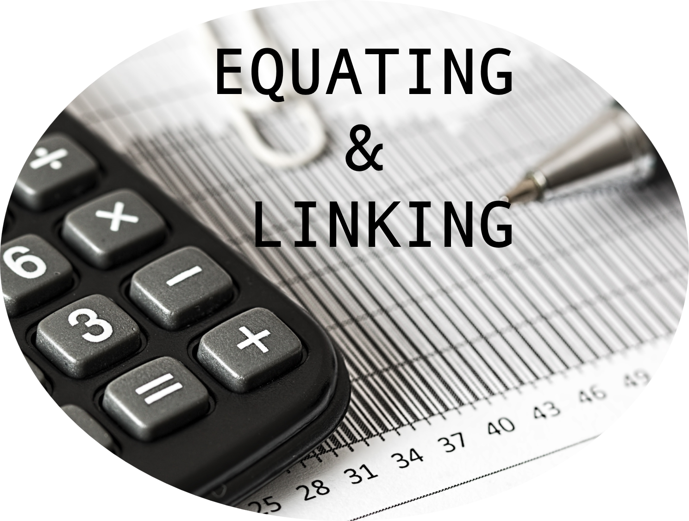

Test equating refers to statistical procedures to
establish comparable scores on different forms of a test, allowing test
scores from each form to be used interchangeably. It allows test
administrators to establish validity of test results across different
forms and years. This online resource aims to present practical
applications of test equating in R by drawing upon information from a
variety of resources about test equating, linking, and scaling.
Well-known test equating methods in Classical Test Theory (CTT) and Item
Response Theory (IRT) are demonstrated using various examples in R. A
zipped folder including the R codes and datasets used in the examples
can be downloaded here.
Note: CTT: Classical Test Theory; IRT: Item Response
Theory.
Michael Kolen and Robert Brennan’s seminal book on equating: Test Equating, Scaling, and Linking: Methods and Practices
Jorge González and Marie Wiberg’s Applying Test Equating Methods
Christopher Desjardins and Okan Bulut’s Handbook of Educational Measurement and Psychometrics Using R
CCSSO’s guidelines on equating: A Practitioners’ Introduction to Equating
Anthony Albano’s vignette for the equate package
Jonathan Week’s vignette for the plink package
Michela Battauz’s article on the equateIRT package
Note: This online resource has been prepared by Dr. Okan Bulut. For questions and comments, please contact Dr. Okan Bulut via email: bulut@ualberta.ca